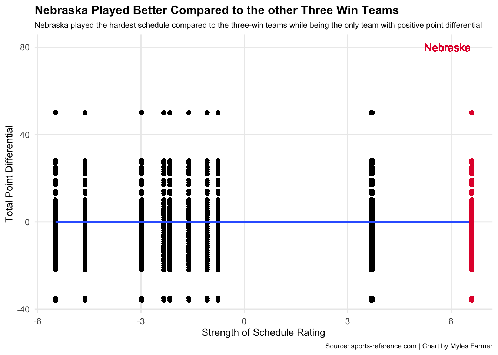
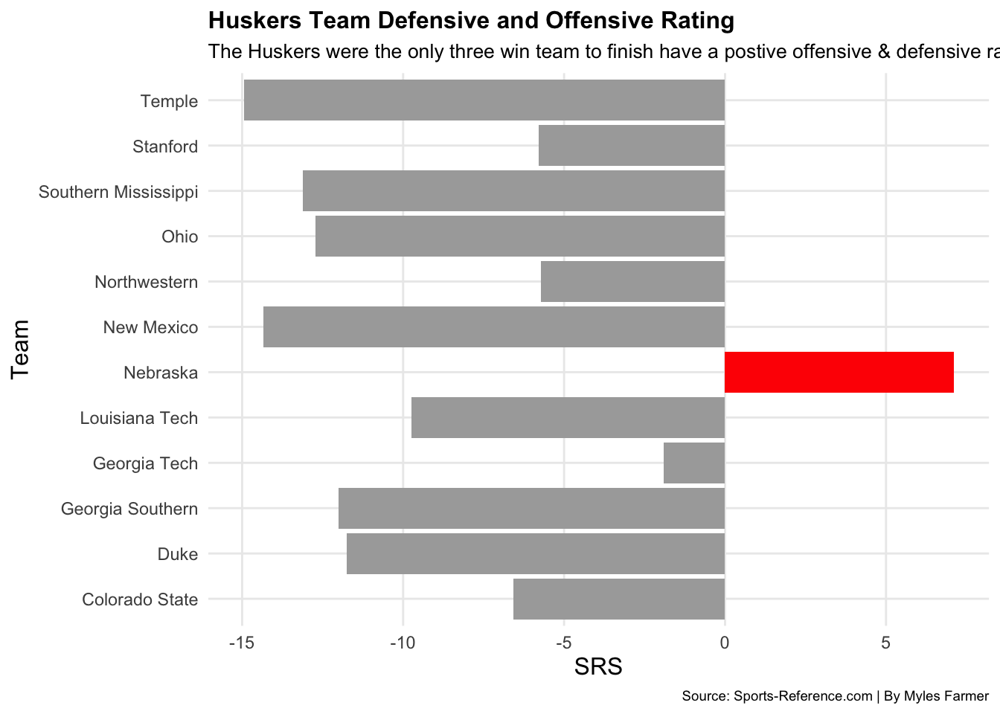
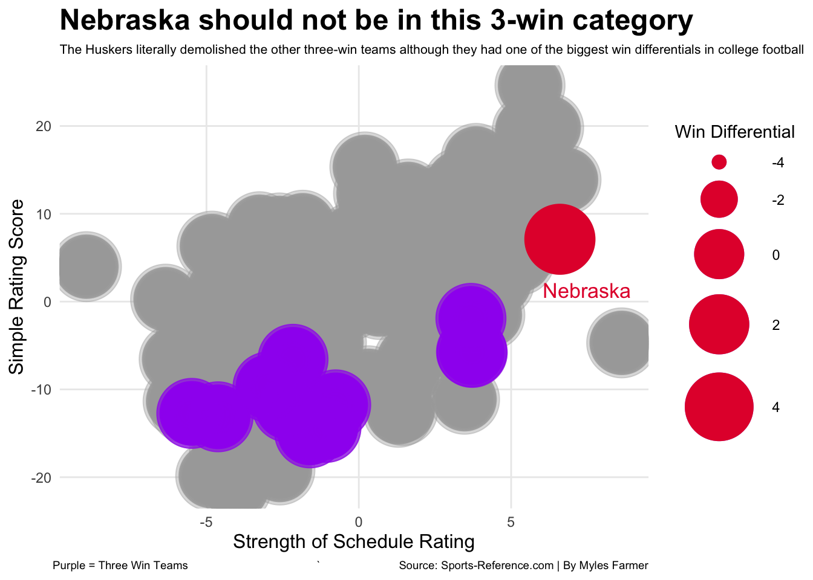

Are the 2021 huskers the best worst football team to not make a bowl game
Author
Myles Farmer
Published
September 4, 2023
This project is based on the 2021 season for the Nebraska Corn huskers because it was very unlucky and I seen in front-row in in person. I felt what the team was going through, and most people only saw the finished product of the team, I was apart of the building and grinding of the 2021 season. I saw the talent we had and the time we spent working to get better. So I wanted to take a look at how my team’s comparison against the other three-win teams, and to find out if this team is the best three-win team in football.
I took a look at the point differential, and I mutated a new column to add a point differential metric for each game in my data. Once I had my point differential metric, I calculated each team’s point differential total for the season using the summarize function. I then joined that data set with my other data set that has a strength of schedule metric for each team. Once I had my new data set, I filtered out all teams that did not finish with three wins so that I could compare Nebraska against the other three-win teams of the 2021 season.
Now that I have just the three-win teams, I decided to calculate a residual to see what teams are performing better or worse than expected. I used the total point differential for each team that I just calculated as well as strength of schedule rating to create a residual. The blue line in this graph represents the predicted value, and the distance each team is from thee blue line is their residual. The further above the line a team is, the better they performed above expectations, and vice-versa.
Code
fit <-lm(sum_pdiff ~ SOS, data = threewin)threewin$predicted <-predict(fit) threewin$residuals <-residuals(fit)neb <- threewin %>%filter(Team =="Nebraska")ggplot(data=threewin, aes(x=SOS, y=sum_pdiff)) +geom_point(color="black")+geom_smooth(method=lm, se=FALSE) +geom_point(data=neb, aes(x=SOS, y=sum_pdiff), color="#E41C38") +geom_text(aes(x=5.9, y=80, label="Nebraska"), color="#E41C38") +labs(x="Strength of Schedule Rating", y="Total Point Differential", title="Nebraska Played Better Compared to the other Three Win Teams", subtitle="Nebraska played the hardest schedule compared to the three-win teams while being the only team with positive point differential", caption="Source: sports-reference.com | Chart by Myles Farmer", x="Strength of Schedule Rating", y="Total Point Differential") +theme_minimal() +theme(plot.title =element_text(size =12, face ="bold"),axis.title =element_text(size =10), plot.subtitle =element_text(size=8),plot.caption =element_text(size =7),panel.grid.minor =element_blank())

Nebraska had the biggest residual by far of all teams that finished with three wins this past season. We led all three-win teams in both total point differential and strength of schedule rating by a significant margin, and we performed far above our expected output. We are sort of in a league of our own when compared to the other three-win teams. The interesting thing I found with this graph is that the predicted line has a positive slope, and it really shouldn’t. Total point differential shouldn’t increase as strength of schedule gets harder. It doesn’t make sense, until you factor in Nebraska’s unprecedented performance. While creating this residual graph, I tried running it without Nebraska and the predicted line had a negative slope like you’d expect. The reason this line is positive is because of Nebraska. Our performance was so strong this season despite our three-wins that we literally flipped this line positive.
Nebraska was the only three-win team to finish with a positive point differential last season. It’s crazy to think about, especially when you factor in that we had one of the toughest schedules to play in all of college football. We lost so many games by so few points, so I wanted to see how that point differential progressed throughout the season.
To do this, I joined two of my datasets together and calculated each team’s cumulative sum of point differential after each game. Once again, I filtered for the three win teams so that I could see how we performed against the teams that finished with the same record as us. Once I had my new data set, I created a step chart to see how these point differentials changed throughout the season.
Code
wl <- wl %>%rename(team = team)fbwl <- fb %>%cross_join(wl)step <- fbwl %>%group_by(team.x) %>%mutate(CumDiff =cumsum(PointDiff))threewin2 <- sr %>%filter(W =="3")nu <- sr %>%filter(Team =="Nebraska")ggplot() +geom_col(data=threewin2, aes(x=Team, y=SRS), fill="dark grey") +geom_col(data=nu, aes(x=Team, y=SRS), fill="red") +coord_flip() +labs(x="Team", y="SRS", title="Huskers Team Defensive and Offensive Rating", subtitle="The Huskers were the only three win team to finish have a postive offensive & defensive rating", caption="Source: Sports-Reference.com | By Myles Farmer") +theme_minimal()+theme(plot.title =element_text(size =12, face ="bold"),axis.title =element_text(size =12), plot.subtitle =element_text(size=10),plot.caption =element_text(size =7),panel.grid.minor =element_blank())

This graph does a good job of illustrating just how close we were in every game we lost this season. You can see the big positive jumps in the games like Northwestern, and you can really see how little it drops for every loss. We were in every game we played this season, and we really don’t belong in this three-win category.
Finally, I wanted to see how Nebraska and the other three-win teams compared to the rest of the NCAA. I wanted to take a look at each team’s expected win differential, so I created a metric that subtracted each team’s total wins from their expected number of wins going into the season. Once I had this, I created a bubble chart that compared each team’s strength of schedule rating against their simple rating score, and I made the size of each team’s bubble their win differential.
Code
windiff <- wl %>%mutate(windiff = expectedWins - total.wins)join <- sr %>%cross_join(windiff)threewin1 <- join %>%filter(W =="3", Team !="Nebraska")neb <- join %>%filter(Team =="Nebraska")ggplot() +geom_point(data=join, aes(x=SOS, y=SRS, size=windiff), color="darkgrey", alpha=.4) +scale_size(range =c(0,20), name="Win Differential") +geom_point(data=threewin1, aes(x=SOS, y=SRS, size=windiff), color="purple", alpha=.7)+geom_point(data=neb, aes(x=SOS, y=SRS, size=windiff), color="#E41C38") +annotate("text", x=7.5, y=1.3, label="Nebraska", color ="#E41C38", cex=4.5)+labs(x="Strength of Schedule Rating", y="Simple Rating Score", title="Nebraska should not be in this 3-win category", subtitle="The Huskers literally demolished the other three-win teams although they had one of the biggest win differentials in college football", caption="Purple = Three Win Teams ` Source: Sports-Reference.com | By Myles Farmer") +theme_minimal()+theme(plot.title =element_text(size =18, face ="bold"),axis.title =element_text(size =12), plot.subtitle =element_text(size=8),plot.caption =element_text(size =7),panel.grid.minor =element_blank())

As you can see, Nebraska had one of the largest win differential margins in all of college football. Also, despite us having the toughest strength of schedule rating out of all three win teams, we still had the largest simple rating score by far. We played tough teams all season, and we played all those teams tough.
With all the statistics and graphs shown in my website, it’s easy to see that Nebraska does not belong in this three-win category. The data shows that this team is capable of a lot more and should expect a lot more going into next season.